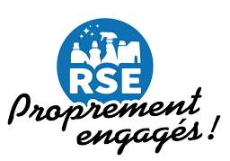
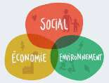

Qui sommes nous?
Qui sommes nous?Située à Montreuil (93), en périphérie immédiate de Paris, l’entreprise Rénovation Tertiaire Service a été créée il y a 6 ans. Son activité initiale de rénovation s’est très rapidement transformée en entreprise dans laquelle le « Tout Corps d’état » s’est imposé avec succès et avec une croissance exponentielle rapide due à la qualité de ses ouvrages. Aujourd’hui, l’entreprise s’est spécialisée aussi bien dans la restructuration complète de Bâtiments, que dans la pose de revêtements muraux ou de sols, la rénovation de salles, cloisonnements, la mise aux normes des installations électriques ou encore l’isolation. Un département de nettoyage spécialisé tous supports, a également été créé afin de pallier aux nécessités de nos chantiers, où parfois la restauration de support est nécessaire en complément de nos travaux (ex pierre de Paris, Pierre de taille, marbres). Notre bureau d’études (dont architecture d’intérieur) nous a également amené à effectuer des missions sur du patrimoine ancien et parfois classé. L’entreprise s’est confrontée à une demande sans cesse grandissante de la part de ses clients, qui souhaitent confier leurs travaux à un seul interlocuteur. Nous prenons ainsi en charge tous les aspects du chantier, et ce, depuis la phase d’étude, la conception, jusqu’à la réalisation finale.
L'ecoute
Qu’il s’agisse de gérer l’agencement, l’agrandissement ou la rénovation complète, ou encore les divers travaux de plomberiesanitaire, électricité, menuiserie, plâtrerie etc… nous restons toujours à l’écoute de nos clients pour intervenir dans les délais et selon les impératifs de l’établissement.
L'experience
RTS – Rénovation Tertiaire Service mène depuis plus de 5 ans des projets de rénovation d’envergure étant un véritable spécialiste pour vos travaux. Nous gérons aussi bien les travaux standards de peinture, de décoration, la pose de parquet, les travaux de maçonnerie, la pose de carrelage, de faux plafond ou encore les rénovations totales..
La réactivitè
Le suivi des souhaits et des impératifs de nos clients est notre priorité. Rénovation Tertiaire Service s’engage auprès de ses clients à garantir un niveau de réactivité maximale en proposant des solutions alliant fiabilité et performance durable.
Nos valeurs et engagements
Qualité, Confiance et innovation Rénovation Tertiaire Service est née en 2016 de l'association de deux entrepreneurs spécialistes du bâtiment. Leur volonté commune était de créer une entreprise générale du bâtiment ayant comme exigence un travail de qualité et un engagement total dans chacun des projets à réaliser. Ces valeurs capitales, placées au coeur de l'activité, permettent de remplir deux objectifs : - la satisfaction du client et la satisfaction personnelle d'un travail réussi. C'est également grâce à nos collaborateurs qui partagent la même vision, à leur professionnalisme et à leur implication, que notre société a pu instaurer des relations solides avec ses clients et ses fournisseurs sur le long terme et ainsi se développer solidement et durablement. La confiance accordée par nos clients est un moteur de l'entreprise. En effet votre satisfaction est essentielle. Afin d'apporter des réponses à chacune des demandes nous évoluons en permanence et proposons des solutions innovantes afin de faire de chaque projet une réalité.
Plan d’actions de Responsabilité Sociétale Entreprise
Depuis 2018, Rénovation Tertiaire Service s’est inscrit dans une démarche d’entreprise responsable, soucieuse de l’environnement, de l’écologie et de son milieu économique. En 2021 nous confirmons notre volonté en y intégrant l’ensemble de nos équipes, en développant des actions responsables. Nous nous engageons dans une démarche visant à intégrer des enjeux de développement durable, à moyen et long terme, et de fournir un cadre d’exigence à nos interlocuteurs. Notre Responsabilité Sociétale Entreprise s’inscrit dans une démarche en évolution :
- Innover sur le long terme Responsabilité dans le domaine économique Nous souhaitons une réduction de notre empreinte environnementale, une politique d’approvisionnement durable et responsable des matières premières utilisées, l’écoconception des emballages de nos matériaux, un engagement pour la “zéro déforestation”.
- Sensibilisation auprès des salariés Responsabilité dans le domaine social Faire participer les salariés sur le terrain pour avoir des idées d’amélioration dans la gestion des matériaux; devenir écoresponsables. Sensibiliser les chefs d’équipes et responsables de chantier pour transmettre les informations auprès des équipes et ainsi former les collaborateurs.
- Stratégies de réduction des déchets Responsabilité dans le domaine environnemental Nous réalisons des fiches de tri pour les déchets inertes et les déchets non dangereux non inertes. Nous envoyons en centre de traitement les déchets spécifiques.
- Amélioration de la performance environnementale de nos constructions Responsabilité dans le domaine environnemental Nous essayons de nous engager dans une politique environnementale lors de nos différents chantiers afin de répondre au mieux aux contraintes économiques et écologiques de nos clients. Les produits éco labellisés ainsi que les produits de matériaux recyclés sont favorisés.
- Garantir la performance économique de l’entreprise Responsabilité dans le domaine économique Instaurer des relations durables avec nos partenaires (sous-traitants et fournisseurs). Nous nous efforçons d’instaurer et de créer au maximum des relations de confiance durables avec l’ensemble de nos collaborateurs et garantir une meilleure efficacité dans la gestion des projets.
- Respecter les impacts environnementaux Responsabilité dans le domaine environnemental Mise en place d’une stratégie de déplacements d’entreprise. Un système de co-voiturage par chef d’équipe a été mis en place pour se rendre sur chaque chantier et ainsi limiter l’empreinte carbone.
7/ Interagir avec les acteurs publics locaux Responsabilité dans le domaine territorial Participer à l’activité économique de la région, au développement du domaine territorial. Accueillir des stagiaires et leur faire découvrir les métiers du bâtiment.
- Optimisation de notre flotte professionnelle Responsabilité dans le domaine environnemental Nous entretenons tous nos véhicules en garages certifiés et/ou labellisés inscrits dans une démarche qualité et/ou environnementale. Notre flotte actuelle est composée de véhicules électriques et hybrides, pour passer en totalité en véhicules électrique à l’horizon 2023.
- Favoriser les achats responsables Responsabilité dans le domaine économique Il s’agit de privilégier les achats responsables auprès de fournisseurs lancés dans une même démarche; et auprès d’artisans et fournisseurs locaux.
- Etre fiscalement responsable Responsabilité dans le domaine de la gouvernance Le paiement des impôts de façon responsable, vérification mensuelle de toutes les attestations de vigilance à
Notre démarche développement durable
Notre entreprise s’est orientée vers deux axes : - Apprendre à économiser et à partager de manière équitable les ressources de l’environnement et à tenir compte des facultés limitées de celui-ci à absorber les déchets et les pollutions. Utiliser au maximum des produits et matériaux écologiques et ou à base de matières recyclées. → c’est la dimension environnementale du développement durable. - Garantir une croissance économique créatrice d’emploi et d’équité sociale → c’est l’aspect économique et social du développement durable. 1) Bilan carbone Nous calculons chaque année le bilan carbone de notre entreprise afin de connaître finement nos sources d’émissions des gaz carboniques afin de les réduire. Notre objectif est d’être une entreprise « zéro carbone » à fin 2024, pour cela nous avons engagé un plan pluriannuel en trois points :
- La croissance de notre activité ne doit pas se traduire par la croissance des émissions de gaz à effet de serre. Nous voulons diminuer nos émissions de CO2 par des actions concrètes :
Achat de véhicules « vert »
Améliorer durablement l’isolation de nos bâtiments
Diminuer nos consommations énergétiques et de consommables
Donner la préférence aux fournisseurs locaux et ayant une vraie démarche environnementale
Améliorer nos flux avec les fournisseurs et nos flux clients
Innover constamment et intégrer de nouvelles technologies dites « propres »
Compenser l’ensemble de nos émissions restantes de CO2 par la plantation d’arbres dans les zones du monde nécessitant un reboisement (Afrique, Asie) par le biais de dons à des associations.
- Gestion des déchets : Nous privilégions la collaboration avec les fournisseurs ayant engagés des démarches environnementales (production du verre, utilisation de PVC sans plomb, matériaux de construction issus du recyclage, bois issus d’une gestion durable des forêts, Notre société a mis en place le circuit d’évacuation des déchets suivants :
Traçabilité des déchets
Recyclage des déchets spécifiques dans des centres de traitement.
Recyclage des produits dans les filières de valorisation
- Concilier le progrès économique et social avec le respect de l’environnement : Nos collaborateurs sont sensibilisés sur la nécessité impérieuse du développement durable à travers un certain nombre d’actions et de formations. Nous mettons tout particulièrement l’accent sur l’intégration et la formation de notre personnel. Cet axe nous permet sa fidélisation et sa motivation. Ainsi moins d’absentéisme, moins de turn-over et plus de professionnalisme sont les garanties d’une continuité et d’une évolution de la qualité de nos services.
La diversité
Refléter la diversité de la société, c’est avant tout promouvoir la diversité et garantir l’égalité des chances à tous les niveaux de l’organisation.
S’enrichir de la diversité des Hommes et des Femmes, c’est s ’appuyer sur les meilleures compétences sans aucune distinction, ce qui est l’une des clés répondant à nos enjeux actuels et à venir. Faire en sorte que chacun d ’entre nous puisse se sentir bien à sa place est également un enjeu . C’est pourquoi, Rénovation tertiaire Service s ’est engagée dans une démarche de promotion de la diversité.
Notre ambition :
- respecter et promouvoir la mixité, la diversité et l’égalité des chances :
Parce que la diversité est un facteur de performance et de développement à la fois personnel et collectif , Rénovation tertiaire Service s ’engage en faveur de la diversité, de l’égalité des chances et de la lutte contre toute forme de discrimination.
- Favoriser la transversalité des métiers : Rénovation Tertiaire Service favorise les passerelles entre les différents métiers. Conducteur de travaux, compagnon… Chacun de nos collaborateurs pourra évoluer , s’il le souhaite , vers les différents métiers de notre activité
.
- Promotion équitable et gestion des talents : Notre politique individualisée de développement des compétences s’inscrit dans la démarche de progrès social de notre entreprise. Parce que chaque collaborateur est unique, nous élaborons ensemble son parcours professionnel et l’accompagnons, afin qu’il se réalise au sein de notre entité, quelle que soit ses origines humaines et sociales. Nous sommes persuadés que la dynamique d’équipe passe par la valorisation des compétences individuelles. Plan de formation personnalisé, briefing managérial, écoute, nous mettons tout en oeuvre pour que chacun de nos talents s’épanouisse. Nos engagements
- Sensibiliser l’ensemble des collaborateurs et offrir à chacun une égalité de droit et de traitement. . Développer la mixité dans tous les métiers, à chaque niveau de responsabilité.
- Former et accompagner les managers impliqués dans le parcours professionnel de nos collaborateurs
- Garantir la collégialité des décisions prises pour les recrutements et la gestion de carrière afin d’assurer une égalité de traitement.
- Permettre l’expression de toute situation de discrimination ou de harcèlement via une cellule indépendante d’écoute et soutenir toute personne confrontée à cette situation.
- Associer nos fournisseurs et sous-traitants à la démarche et nous assurer de leur adhésion notamment au moment de leur sélection et de leur évaluation.
- Développer des partenariats avec le secteur adapté et de l’insertion et soutenir l’engagement solidaire des collaborateurs pour renforcer les liens entre l’entreprise et le monde associatif..

 Nettoyage
Nettoyage